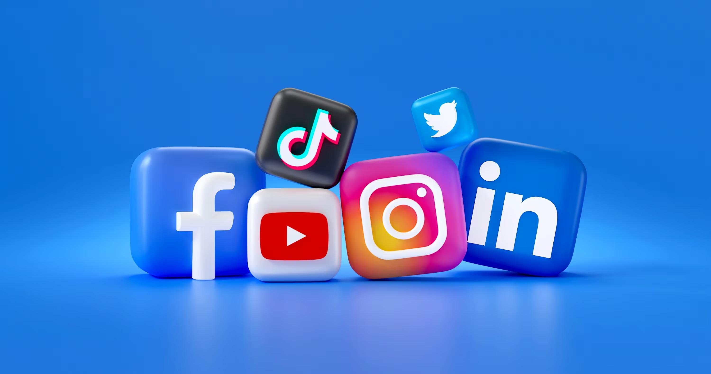

@targettasty – recept & behind the scenes.

Våra kanaler
TikTok
Korta videos med snabba tips och matprep.
YouTube
Längre videor med måltidsplanering och guider.
Uppdatera din profil
Du kan ändra dina inställningar (t.ex. nyhetsbrev) i användarprofilen.